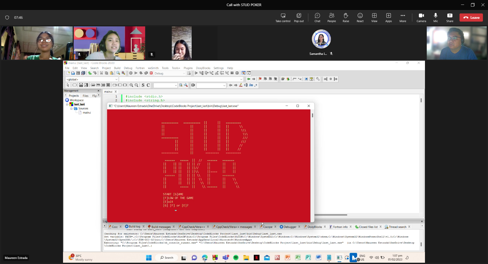

Project 1: Poker Game
First project as a freshman. We were told to make our own game, and my group chose Poker.
Technologies used:
1. C Programming Language: Known for performance and system control.
2. Standard Libraries: Includes libraries like stdio.h for input/output, stdlib.h for random number generation, and math.h for mathematical functions.
3. Data Structures: Uses arrays and floats to manage card values and player scores.
4. Game Logic: Functions modularize tasks such as shuffling cards, calculating scores, and displaying results.
5. Control Structures: Employs loops and conditionals for iteration and decision-making.
6. User Interface: Provides a text-based interface for user interaction.
7. Random Number Generation: Uses rand() and srand() for card generation.
8.Delays: Implements a custom delay function for simulating pauses.
View on GitHub